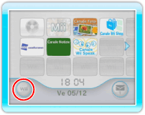
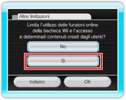

Il filtro famiglia può essere usato per limitare ai minori l’accesso a contenuti che i loro genitori o tutori legali considerano non idonei. Per usare questa funzione, esegui le seguenti operazioni.
Dal menu Wii, seleziona l’icona Opzioni Wii. Seleziona IMPOSTAZIONI CONSOLE Wii e poi FILTRO FAMIGLIA.

Quando ti viene chiesto “Vuoi cambiare le impostazioni del filtro famiglia?” seleziona SÌ. Dopo aver inserito il tuo PIN, seleziona ALTRE LIMITAZIONI.
Quando compare la domanda “Limita l’utilizzo delle funzioni online della bacheca Wii e l’accesso a determinati contenuti creati dagli utenti?” scegli SÌ. Seleziona due volte CONFERMA.
Con queste impostazioni è impossibile avere accesso al Canale Wii Speak.
Nota: a seconda della versione del menu Wii della tua console Wii, i nomi delle sezioni e dei pannelli possono essere leggermente differenti da quelli di questo manuale.